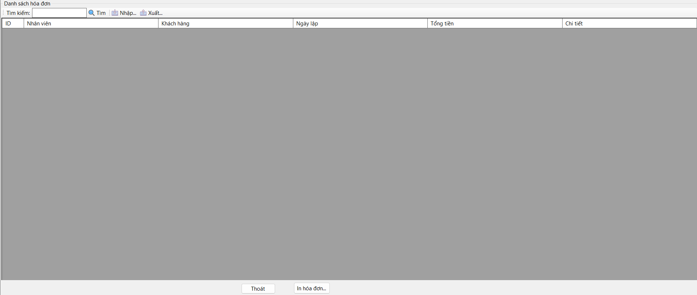
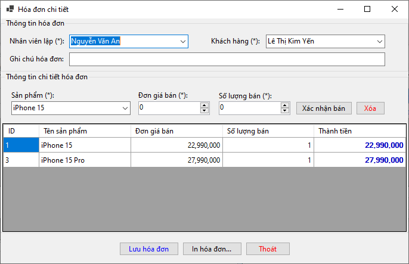

Hướng dẫn sử dụng màn hình Hóa đơn bán hàng.
Form hóa đơn dùng để tìm kiếm, tra cứu và xuất danh sách các hóa đơn đã được tạo trong hệ thống.
Mã hóa đơn,
Tên khách hàng vào ô tìm kiếm để lọc danh sách hóa
đơn.
Xem chi tiết để hiển thị thông tin hóa đơn (sản
phẩm, số lượng, tổng tiền...).
Xuất file để in hoặc lưu ra file PDF, Excel.
Mã hóa đơnNgày lậpNhân viênKhách hàngTổng tiềnChi tiếtGiao diện có thể như hình minh họa sau (nếu có):
Hướng dẫn sử dụng màn hình Hóa đơn bán hàng chi tiết.
Màn hình này dùng để lập hóa đơn bán hàng, ghi nhận chi tiết sản phẩm, số lượng, đơn giá và tổng thành tiền.
Nhân viên lập và
Khách hàng từ danh sách.
Đơn giá bán và
Số lượng bán.
Xác nhận bán để thêm
vào danh sách chi tiết.
Lưu hóa đơn để ghi lại hóa đơn.
In hóa đơn.Thoát để đóng form.
Dưới đây là ảnh minh họa giao diện:
(*) là bắt buộc nhập.Xóa ở bên phải.